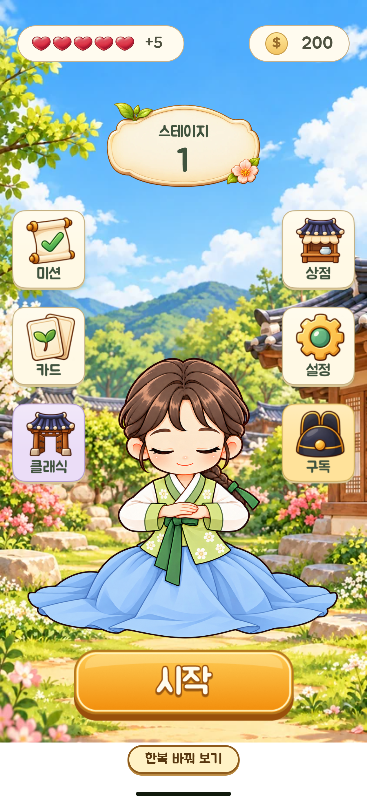

<!doctype html>
<html lang="ko">
<meta charset="utf-8"><meta name="viewport" content="width=device-width,initial-scale=1">
<title>원화 기준 인사 자세 비교</title>
<style>
*{box-sizing:border-box}body{margin:0;background:#f4f1e8;color:#2d4438;font-family:system-ui,sans-serif}header{max-width:650px;margin:auto;padding:22px 16px 12px}h1{font-size:21px;margin:0 0 9px}p{font-size:14px;line-height:1.55;margin:7px 0}nav{display:flex;gap:7px;margin:16px 0 10px}button{flex:1;min-height:44px;border:1px solid #a7b5a7;border-radius:9px;background:#fff;color:#2d4438;font:600 14px system-ui;cursor:pointer}button[aria-pressed=true]{background:#315842;color:#fff;border-color:#315842}button:focus-visible,a:focus-visible{outline:3px solid #da942b;outline-offset:3px}figure{margin:0 auto;width:min(100%,422px)}figure img{width:100%;height:auto;display:block}figcaption{padding:12px 16px;font-size:13px;line-height:1.5}footer{max-width:650px;margin:0 auto;padding:6px 16px 28px;font-size:14px}a{color:#285f45}strong{font-weight:700}
</style>
<header>
<h1>원화 기준 인사 자세 비교</h1>
<p>기존 고해상도 원화를 참고해 인사 자세 한 장을 새로 그렸습니다. 아래 버튼으로 같은 메인 배경에서 비교할 수 있습니다.</p>
<nav aria-label="비교할 이미지"><button data-view="original" aria-pressed="false">기준 원화</button><button data-view="low" aria-pressed="false">이전 인사</button><button data-view="native" aria-pressed="true">재제작 인사</button></nav>
</header>
<figure><figcaption id="caption">재제작 인사 · 1254×1254 원본 PNG로 만든 정지 프레임입니다.</figcaption></figure>
<footer><p><strong>정지 프레임 검토본입니다.</strong> 꽃문양·옷 주름 등 세부 차이가 있으며, 36프레임 전체 애니메이션의 동일성과 연결은 아직 검증하지 않았습니다.</p><p><a href="greeting-seated-native.png">투명 PNG 원본 보기</a> · <a href="../?hanbok=1&amp;outfit=1&amp;gender=girl">기존 모션 미리보기</a></p></footer>
<script>
const views={original:['main-original.webp','기준 원화 · 현재 메인에 사용 중인 여자아이입니다.'],low:['main-low-resolution.webp','이전 인사 · 저해상도 프레임을 확대한 기존 모션의 한 장입니다.'],native:['main-native-rebuild.webp','재제작 인사 · 1254×1254 원본 PNG로 만든 정지 프레임입니다.']};
document.querySelectorAll('button[data-view]').forEach(button=>button.addEventListener('click',()=>{const view=views[button.dataset.view];document.querySelectorAll('button[data-view]').forEach(b=>b.setAttribute('aria-pressed',String(b===button)));document.getElementById('screen').src=view[0];document.getElementById('screen').alt=view[1];document.getElementById('caption').textContent=view[1];}));
</script></html>
